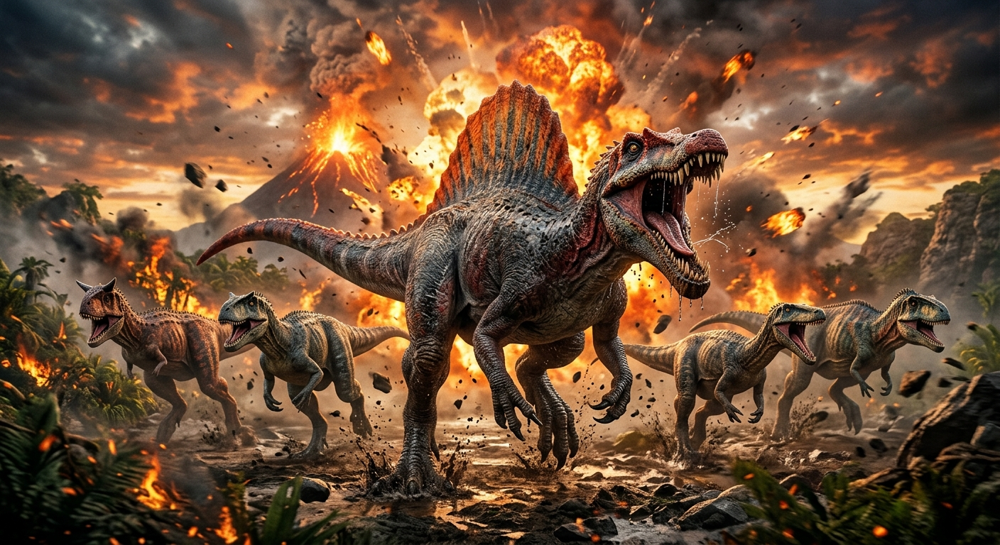

Espinossauro
VO Guia Rápido do Spinossauro: O Maior Predador da Pré-História Sabia que o maior carnívoro de todos os tempos não foi o T-Rex, mas sim um gigante aquático? O Spinossauro pesava até 9 toneladas, media até 18 metros e transformou o que sabemos sobre os dinossauros. 3 Curiosidades Incríveis Gigante dos Rios: Tinha ossos densos e focinho de crocodilo, perfeitos para caçar peixes gigantes na água. Vela Dorsal: Suas espinhas nas costas chegavam a 1,8 metro de altura e serviam para regular a temperatura ou atrair parceiros. Descoberta Rara: Os únicos fósseis originais foram destruídos na Segunda Guerra Mundial, o que torna cada nova descoberta um evento único. A Grande Polêmica: Como Ele Caçava? A comunidade científica ainda se divide em duas teorias principais: Nadador Ativo: Usava sua cauda em formato de nadadeira para perseguir presas em águas profundas. Caçador de Margem: Agia como uma garça gigante, esperando na beira dos rios para capturar peixes sem mergulhar.
por: Azeveds